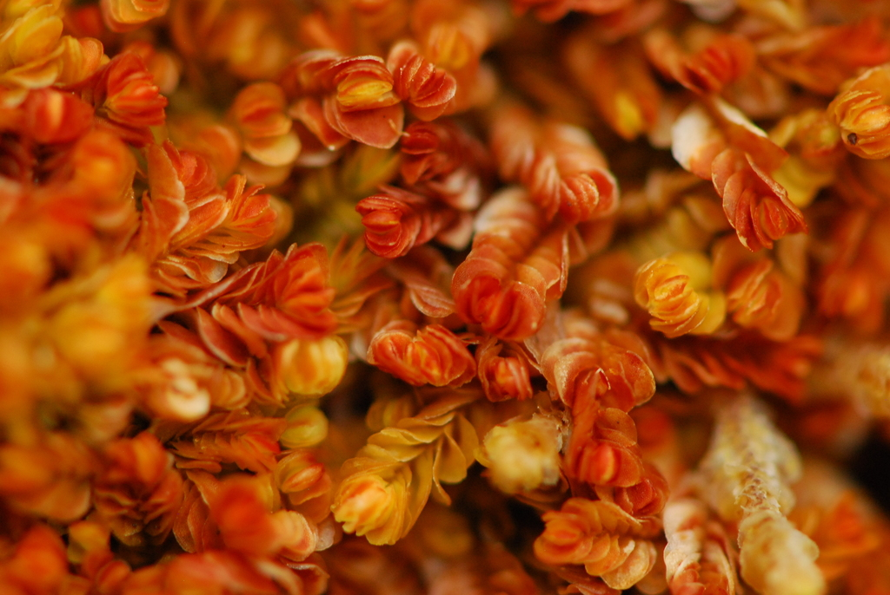

Myliaceae
Mylia Family
Myliaceae is a small but distinctive family of leafy liverworts, containing only the genus Mylia. These robust plants, primarily found in the Northern Hemisphere, are characterized by their succubous, entire, rounded leaves, the presence of lanceolate underleaves, and exceptionally large leaf cells often visible with a hand lens. They typically inhabit acidic bogs and wet heathlands.
Overview
The Myliaceae family, consisting solely of the genus Mylia, comprises a few species of relatively robust liverworts known for their distinct cellular structure and habitat preferences. Primarily distributed across temperate, boreal, and oceanic regions of the Northern Hemisphere (M. taylorii also occurs in the South), these plants are often conspicuous components of acidic, wet environments like peat bogs (frequently growing among Sphagnum mosses), wet heathlands, and moist acidic rock ledges.
Key identifying features include the succubously arranged, broadly rounded, entire (unlobed) leaves, the presence of small but distinct lanceolate or sometimes bifid underleaves, and notably large leaf cells and oil bodies, which can sometimes be discerned even with a hand lens. The plants often exhibit strong pigmentation, appearing yellowish-green, olive-brown, reddish-brown, or deep purplish-red. Fertile plants possess a large perianth that is characteristically flattened towards the mouth.
Phylogenetically, Myliaceae is placed within the Jungermanniales, suborder Jungermanniineae. Its unique combination of features, particularly the cellular gigantism, marks it as a distinct lineage whose relationships with other families like Plagiochilaceae and Jungermanniaceae continue to be explored.
Quick Facts
- Scientific Name: Myliaceae
- Common Name: Mylia Family
- Number of Genera: 1 (Mylia)
- Number of Species: 2-3
- Distribution: Primarily Northern Hemisphere (temperate, boreal, oceanic); one species bipolar
- Evolutionary Group: Liverworts (Marchantiophyta) - Jungermanniopsida - Jungermanniineae
- Key Feature: Entire rounded leaves, lanceolate underleaves, very large cells/oil bodies
- Habitat Specificity: Often in acidic bogs and wet heathlands
Key Characteristics
Gametophyte Form and Habit
Plants are medium-sized to large, often robust, typically forming loose prostrate to ascending mats or growing interwoven with Sphagnum and other bryophytes. Color is often distinctive, ranging from yellowish-green to olive-green, reddish-brown, or deep purplish-red, especially in exposed conditions. Stems are relatively thick, with branching variable but often sparse, typically lateral or ventral-intercalary.
Leaves and Underleaves
Leaves are arranged succubously and are typically closely overlapping (imbricate). They are broadly ovate to almost circular, with a distinctively entire (unlobed) and broadly rounded apex. Leaves are often concave. Underleaves are consistently present, though much smaller than the leaves; they are typically lanceolate to subulate (awl-shaped), sometimes bifid at the very tip, and usually appressed to the stem.
Rhizoids
Rhizoids are numerous, long, often purplish or brownish, scattered along the ventral side of the stem, sometimes forming a dense mat.
Cellular Structure
A highly distinctive feature: leaf cells are exceptionally large (often 40-60 µm wide or more in mid-leaf), typically hexagonal or polygonal. Cell walls are usually thin or slightly thickened, with trigones generally small or indistinct. Oil bodies are also very large and conspicuous, usually few per cell (1-3), coarsely granular or appearing botryoidal (like a cluster of grapes).
Asexual Reproduction
Asexual reproduction via gemmae occurs in Mylia anomala, where multicellular, greenish gemmae are produced on the surfaces and margins of upper leaves. Gemmae are typically absent in M. taylorii.
Reproductive Structures
Plants are dioicous.
- Antheridia are borne in the axils of saccate bracts, forming intercalary spikes on main stems.
- Archegonia are terminal on leading shoots, surrounded by several pairs of bracts that are similar to vegetative leaves but often larger.
- A large, prominent perianth is present, typically long-exserted. It is usually cylindrical or fusiform at the base, becoming distinctly dorsiventrally compressed (flattened) and often somewhat bilabiate towards the wide mouth. The upper part is often plicate, and the mouth is typically crenulate or denticulate. Marsupia are absent.
Sporophytes and Spores
The sporophyte develops within the perianth. The seta is long. The capsule is ovoid, dark brown, with a wall composed of multiple layers of cells. Dehiscence occurs via four valves.
Field Identification
Identifying Myliaceae involves looking for robust liverworts with entire, rounded leaves and distinct underleaves, often in wet, acidic habitats. The large cell size is a key clue, sometimes visible with a strong hand lens.
Primary Identification Features
- Leaves: Succubous, broadly ovate to circular, entire with a rounded apex.
- Underleaves: Consistently present, typically lanceolate (sometimes bifid at tip), much smaller than leaves but usually visible.
- Cells: Exceptionally large (may appear granular or textured with hand lens).
- Habitat: Typically acidic bogs (often with Sphagnum), wet heathland, moist acidic rocks/logs.
- Color: Often robust, with yellowish-green to reddish-brown or purplish hues.
- Perianth (if fertile): Large, flattened towards the mouth.
Secondary Identification Features
- Oil Bodies (Microscopic): Very large, few per cell.
- Gemmae: Present on leaves in M. anomala, absent in M. taylorii.
- Rhizoids: Often numerous, sometimes purplish.
Seasonal Identification Tips
Myliaceae gametophytes are perennial:
- Year-Round: Vegetative features (leaf shape, underleaves, large cells) are constant. Plants are often conspicuous due to size and color.
- Habitat Moisture: Best observed when habitats are moist; bogs and heathlands may have seasonal water level changes.
- Reproduction: Perianths and sporophytes may be found during favorable growing seasons. Gemmae on M. anomala can be present much of the year.
Common Confusion Points
The combination of entire rounded leaves, lanceolate underleaves, and large cells is distinctive:
- Jungermanniaceae (subg. Jungermannia): Also have entire, rounded leaves and succubous arrangement, but lack underleaves entirely and have significantly smaller cells. Perianth shape differs (typically cylindrical/fusiform, not flattened above).
- Plagiochilaceae (Plagiochila): Robust plants with succubous leaves, but leaves are typically asymmetric, often decurrent, toothed, and underleaves are absent or minute/different. Cells are smaller.
- Geocalycaceae (Harpanthus, some Chiloscyphus): Have underleaves present, but leaves are typically bilobed or retuse, not broadly rounded and entire. Cells are smaller.
- Nardiaceae (Nardia): Have entire or emarginate leaves and sometimes underleaves, but cells are smaller, often with very large trigones, and reproductive structures differ.
Field Guide Quick Reference
Look For:
- Robust plants, often reddish/purplish
- Leaves succubous, entire, rounded
- Lanceolate underleaves present
- Very large cells (check with lens)
- Acidic bog / wet heath habitat
- Perianth flattened above (if fertile)
- Gemmae on leaves (M. anomala)
Key Distinctions:
- Entire leaves + Lanceolate underleaves + Large cells
- Underleaves present (vs. absent in Jungermannia, Plagiochila)
- Leaves entire (vs. lobed in Lophoziaceae, Geocalycaceae)
- Large cells (vs. smaller in most others)
- Perianth flattened above (vs. cylindrical in Jungermannia)
Notable Examples
The family contains only the genus Mylia, with two main widespread species:

Mylia anomala
Anomalous Flapwort
Characteristic species of acidic peat bogs, typically growing interwoven with Sphagnum. Often yellowish-green to reddish-brown. Distinguished by the frequent presence of multicellular gemmae produced on the surfaces and margins of upper leaves. Underleaves lanceolate.

Mylia taylorii
Taylor's Flapwort
Often more robust than M. anomala, frequently forming large patches on wet, acidic rocks, peat banks, or logs in humid oceanic or montane regions. Typically deep green, reddish-brown, or purplish-red. Lacks gemmae. Underleaves lanceolate or sometimes bifid. Found in both Northern and Southern Hemispheres.
Phylogeny and Classification
Myliaceae is classified within the liverwort division Marchantiophyta, class Jungermanniopsida, and order Jungermanniales. Its precise position within the order has been subject to some debate over time due to its unique combination of characters. However, recent molecular phylogenetic studies generally place it within the suborder Jungermanniineae, though potentially as a somewhat isolated lineage or perhaps related to families like Plagiochilaceae or Jungermanniaceae.
The family's distinctiveness is underscored by features such as the entire, rounded leaves coupled with lanceolate underleaves, the exceptionally large cells and oil bodies (cellular gigantism), and the dorsiventrally compressed perianth. These traits separate it clearly from the core groups of families like Lophoziaceae or Jungermanniaceae, supporting its recognition at the family level.
Position in Plant Phylogeny
- Kingdom: Plantae
- Clade: Embryophytes (Land Plants)
- Division: Marchantiophyta (Liverworts)
- Class: Jungermanniopsida
- Order: Jungermanniales
- Suborder: Jungermanniineae
- Family: Myliaceae
Evolutionary Significance
Myliaceae is significant for:
- Cellular Gigantism: Represents an extreme in large cell and oil body size within leafy liverworts, raising questions about its physiological implications.
- Ecological Specialization: Primarily adapted to acidic, wet, nutrient-poor environments like peat bogs and heathlands.
- Unique Morphology: The combination of entire rounded leaves, lanceolate underleaves, and compressed perianth marks a distinct evolutionary pathway.
- Phylogenetic Placement: Its somewhat uncertain but distinct position helps refine understanding of relationships within the Jungermanniales.